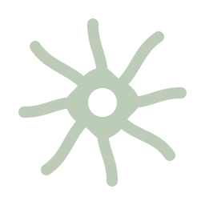
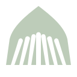
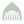
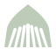
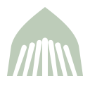
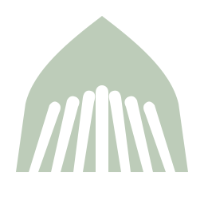
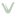
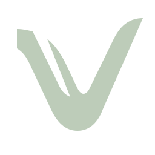

Three original vector systems, built on VEINED’s graphite, sage and ivory world. The veined octopus inspires coordination, adaptability and multiple routes; the marks remain abstract.
Recommended candidate: C — Quiet CurrentOwner approval open · Execution closed
Concept A
VEIN NEXUS
Eight routes converge on a quiet, open nucleus. Curved branches connect organic vein structure with precise network coordination.
White
Ink
16px24px32px64px128px

256px
Eight open cubic route paths; one closed four-lobed nucleus with an open central counter. Branches are intentionally free of terminal dots.
A calm mantle is cut by seven rising channels, leaving eight implied extensions. A solid, architectural silhouette, without eyes or illustrated tentacles.

White
Ink
16px

24px32px

64px

128px

256px
One pointed mantle silhouette with a flared lower edge; seven rising negative-space channels imply exactly eight extensions. The pointed upper contour avoids a cartoon head.
Two inbound currents merge into one continuous V. An open incision at the shoulder makes the junction visible; a rounded bend releases into a rising, tapered route.
White
Ink

16px24px32px64px128px

256px
One closed cubic silhouette with an open shoulder incision; no strokes, masks, overlap or filters. Two inbound branches join below the incision; the rising terminal balances the broad lower bend.
Designer assessment out of 10 per factor; this is not market research or trademark clearance. Quiet Current has one solid path and preserves its open V at 16px. A tells the eight-route story most explicitly. B is the most architectural, but its narrow channels soften at favicon scale.
The planned handle @veinedxyz is text only. Account control, owner brand approval, external audit and legal clearance remain open. No public release is authorized.